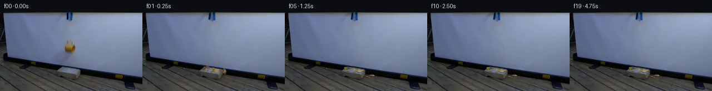

![首帧]()

Round 00
2026-11-05T13:48:38.109809+00:00像素候选变化代码 +542/−0inspection 更新
pixels 7588b62af05a88f3 · code 654b163dccc3d293
查看本轮 generate.py 真实 diff
--- previous/generate.py
+++ current/generate.py
@@ -0,0 +1,542 @@
+"""PixelWorld continuation using only the supplied RGB frame and local math.
+
+No image viewing, learned models, external assets, or physics/render engines.
+The first frame is copied exactly. All geometry is measured in OBSERVATION.md.
+"""
+from pathlib import Path
+import json
+import math
+
+import cv2
+import numpy as np
+from PIL import Image, ImageDraw
+from scipy.ndimage import gaussian_filter
+from scipy.spatial.transform import Rotation
+
+from artifact_io import save
+
+
+ROOT = Path(__file__).resolve().parent
+S = 4
+W, H = 256, 144
+RNG = np.random.default_rng(126)
+SOURCE = np.array(Image.open(ROOT / "first_frame.png").convert("RGB"))
+Y, X = np.mgrid[:H, :W]
+
+
+def polygon_mask(points, scale=1):
+ mask = np.zeros((H * scale, W * scale), np.uint8)
+ pts = np.rint(np.array(points) * scale).astype(np.int32)
+ cv2.fillPoly(mask, [pts], 255)
+ return mask.astype(np.float32) / 255
+
+
+def background_and_cup():
+ """Use surrounding screen pixels to fill the cup and its old soft shadow."""
+ u, v = (X - 124) / 50, (Y - 70) / 40
+ terms = [np.ones_like(u), u, v, u*u, u*v, v*v,
+ u**3, u*u*v, u*v*v, v**3]
+ design = np.stack(terms, -1)
+ sample = ((X >= 78) & (X <= 168) & (Y >= 37) & (Y <= 98)
+ & (Y < 77.5 + X * .166))
+ exclude = (((X - 114) / 27)**2 + ((Y - 77) / 27)**2 < 1)
+ exclude |= ((X >= 112) & (X <= 140) & (Y >= 47) & (Y <= 80))
+ sample &= ~exclude
+ coeff = np.linalg.lstsq(design[sample], SOURCE[sample], rcond=None)[0]
+ estimate = design @ coeff
+ # Very small grain from a clean nearby part of this same screen.
+ grain = SOURCE.astype(float) - gaussian_filter(SOURCE.astype(float), (1, 1, 0))
+ gx = 153 + (X % 10)
+ estimate += grain[Y, gx] * .62
+
+ outline = [(122,49),(128,49),(131,51),(132,56),(134,57),
+ (136,59),(138,63),(137,69),(136,73),(134,77),
+ (130,77),(128,75),(121,74),(117,72),(114,68),
+ (115,63),(117,59),(119,55),(120,51)]
+ silhouette = polygon_mask(outline)
+ local_fill_mask = (gaussian_filter(silhouette, .5) > .01).astype(np.uint8)*255
+ local_fill = cv2.inpaint(SOURCE, local_fill_mask, 5, cv2.INPAINT_TELEA).astype(float)
+ # Alpha is inferred relative to a locally filled screen that still includes
+ # the soft screen shadow, so that shadow is not fractured as ceramic.
+ contrast = np.max(np.abs(SOURCE.astype(float) - local_fill), -1)
+ alpha = np.clip((contrast - 5) / 28, 0, 1)
+ alpha *= gaussian_filter(silhouette, .55)
+ alpha[Y >= 78] = 0
+ alpha[alpha < .045] = 0
+ foreground = np.where(
+ alpha[...,None] > 0,
+ (SOURCE.astype(float) - (1-alpha[...,None])*local_fill)
+ / np.maximum(alpha[...,None], .045), 0)
+ foreground = np.clip(foreground, 0, 255)
+
+ cup_clear = gaussian_filter((local_fill_mask > 0).astype(float), .8)
+ shadow_radius = ((X - 112) / 23)**2 + ((Y - 81) / 20)**2
+ shadow_clear = np.clip((1 - shadow_radius) * 3.2, 0, 1)
+ shadow_clear *= np.clip((78 + .166*X - Y) / 2.5, 0, 1)
+ remove = np.maximum(cup_clear, shadow_clear * .96)
+ clean = SOURCE.astype(float)*(1-remove[...,None]) + estimate*remove[...,None]
+ clean = np.clip(clean, 0, 255)
+ fit_errors = np.abs((design @ coeff)[sample] - SOURCE[sample])
+ info = {
+ "screen_fit_mean_absolute_error": float(fit_errors.mean()),
+ "cup_alpha_area_pixels": float(alpha.sum()),
+ "cup_alpha_bbox": [int(X[alpha > .1].min()), int(Y[alpha > .1].min()),
+ int(X[alpha > .1].max()), int(Y[alpha > .1].max())],
+ }
+ return clean, foreground, alpha, info
+
… diff truncated; 455 more lines …